Cambridge AS9618 | Paper 2 | Section 11: Programming
Declarations, assignment and input/output
Flexible-depth lesson
S11.02 | Learn from the diagrams, test the method, then choose the practice you need.
Choose a Quick, Full or Deep route
Quick route
Use the diagnostic, learning objectives, first worked example and foundation question. Stop once the learner can explain the central distinction accurately.
Full route
Use every knowledge-point material set, the worked method, the terminology check and all questions.
Deep route
Add the prerequisite refresher, ask learners to connect the concept checklist, discuss the labelled extension and complete a transfer question without a model answer.
Part 1 | optional depth
Prerequisite knowledge and quick diagnostic
Recall S10.01, S9.06 before starting this lesson.
Give one accurate definition or method step before continuing. If it is missing, revisit only that prerequisite.
Open optional prerequisite refresher
Select and use appropriate types for a problem solution. The Version 2 Notes name integer, real, char, string, Boolean and date, and require the Cambridge pseudocode type names INTEGER, REAL, CHAR, STRING, BOOLEAN, DATE, ARRAY and FILE.
Understand integer, real, char, string, Boolean and date types and Cambridge pseudocode type names.
The three basic algorithm constructs are sequence, selection and iteration (repetition); students must recognise and use each construct, including combinations of constructs.
Understand and use sequence, selection and iteration.
Part 2 | knowledge-point material sets
Learn each point through visuals
Follow the map, the three-part explanation and the concrete cue. Open precise wording only after the idea is clear.
Open the concept checklist and choose what to teach
StartWrite pseudocode for declaration and initialisation of constants
Changeexpressions using arithmetic or logical operators
CheckArithmetic expressions use operators such as +, -, , /, DIV and MOD
S11.02 diagrams
1 / 5
01
Concrete example · 1 of 5
Java I/O syntax is not Cambridge pseudocode
Open text transcript
Java support only
Cambridge-style pseudocode
OUTPUT "Enter mark"
INPUT Mark
OUTPUT "Mark: " & Mark
Java support example only
Scanner input = new Scanner(System.in);
System.out.print("Enter mark: ");
02
Concrete example · 2 of 5
Operators combine values to calculate a result
Open text transcript
Arithmetic operators
Operator
addition
7 + 3 = 10
subtraction
7 - 3 = 4
multiplication
7 3 = 21
03
Diagram · 3 of 5
OUTPUT displays text, values or expressions
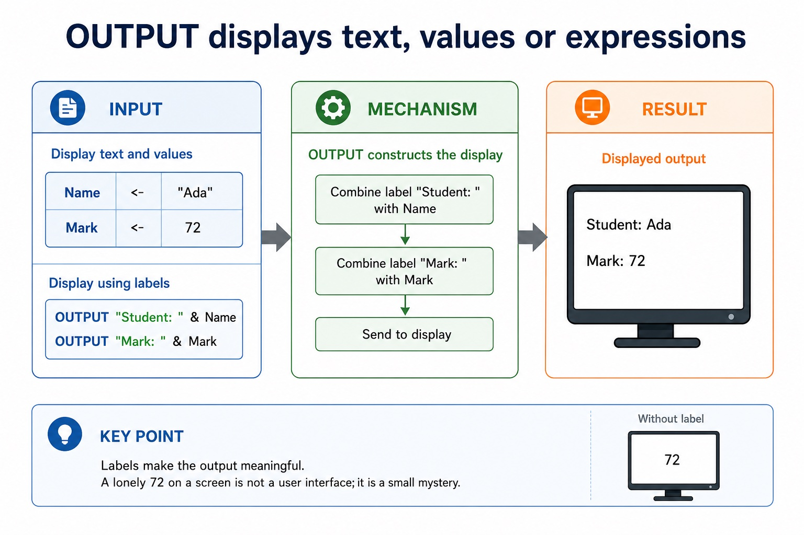
Open text transcript
Display text and values
Name <- "Ada"
Mark <- 72
OUTPUT "Student: " & Name
OUTPUT "Mark: " & Mark
Displayed output
Student: Ada
Mark: 72
04
Concrete example · 4 of 5
Local variables are declared inside a subroutine or block
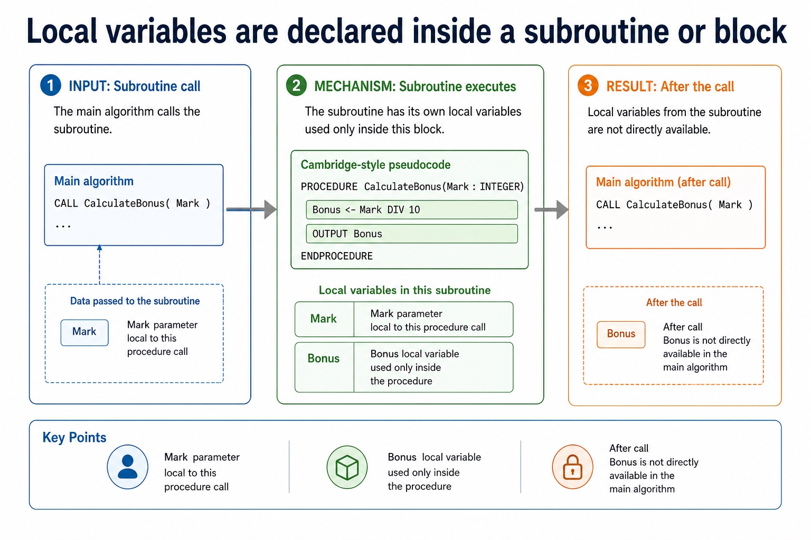
Open text transcript
Local variables
Cambridge-style pseudocode
PROCEDURE CalculateBonus(Mark : INTEGER)
Bonus <- Mark DIV 10
OUTPUT Bonus
ENDPROCEDURE
Reasoning
Mark parameter local to this procedure call
05
Process · 5 of 5
A string is a sequence of characters
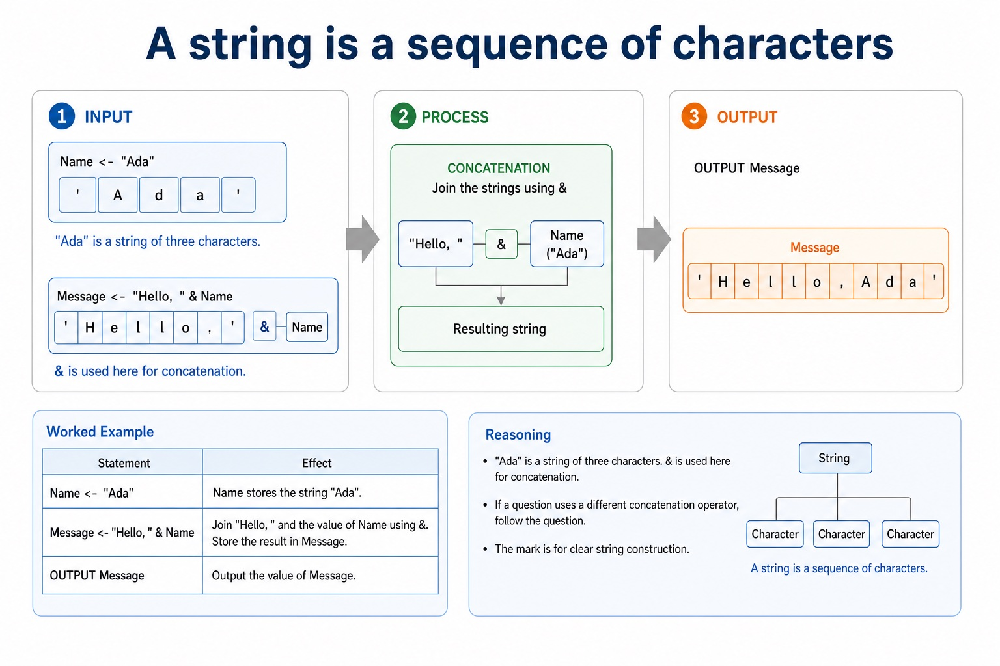
Open text transcript
Cambridge-style assignment
Name <- "Ada"
Message <- "Hello, " & Name
OUTPUT Message
Reasoning
"Ada" is a string of three characters. & is used here for concatenation.
If a question uses a different concatenation operator, follow the question. The mark is for clear string construction.
Open precise syllabus wording
Use declarations, constants, variables, assignment, arithmetic/logical operations and input/output.
Write pseudocode for declaration and initialisation of constants; declaration of variables; assignment of values; expressions using arithmetic or logical operators; input from the keyboard; and output to the console.
Supporting diagram library
1 / 25
01
Diagram · 1 of 25
Start with the shape of the decision
Open text transcript
Choosing IF or CASE
Situation
Usually better
Pass if mark is at least 50
uses a relational comparison
Menu option 1, 2, 3 or invalid
one variable has discrete values
Adult members get one discount; adult non-members another
02
Diagram · 2 of 25
Use IF when a Boolean condition decides the route
Open text transcript
IF selection
Use when
Cambridge-style pattern
action is needed only when condition is true
IF Found THEN ... ENDIF
IF...ELSE
two paths are needed
IF Mark = 50 THEN ... ELSE ... ENDIF
03
Diagram · 3 of 25
Same idea, different syntax
Open text transcript
Cambridge pseudocode uses CASE...OF, OTHERWISE and ENDCASE.
Java switch syntax may support understanding but is not Cambridge pseudocode.
Both forms must preserve the same branch meanings.
04
Diagram · 4 of 25
A decision inside another decision
Open text transcript
Nested selection
Discount example
IF Age = 18 THEN
IF Member = TRUE THEN
Discount <- 0.20
Discount <- 0.10
Discount <- 0.05
Trace the paths
05
Diagram · 5 of 25
Trace a nested IF
Open text transcript
Interactive path tracer
Enter values to trace which branch runs.
06
Diagram · 6 of 25
The symbol changes, the update idea does not
Open text transcript
Pseudocode vs Java
Cambridge-style pseudocode
CONSTANT PassMark = 50
DECLARE Mark : INTEGER
DECLARE Passed : BOOLEAN
INPUT Mark
Passed <- Mark = PassMark
Java support only
07
Diagram · 7 of 25
Local and global variables differ by accessibility and lifetime
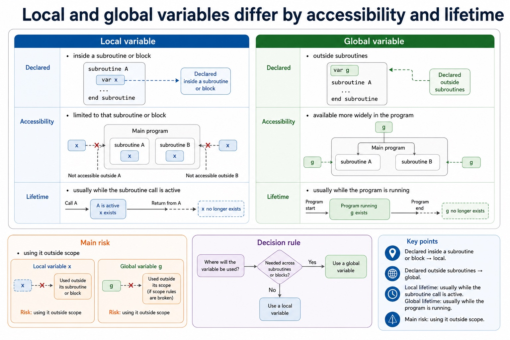
Open text transcript
Local variable
Global variable
Declared
inside a subroutine or block
outside subroutines
limited to that subroutine or block
available more widely in the program
Lifetime
08
Diagram · 8 of 25
Global variables are declared outside subroutines and can be accessed widely
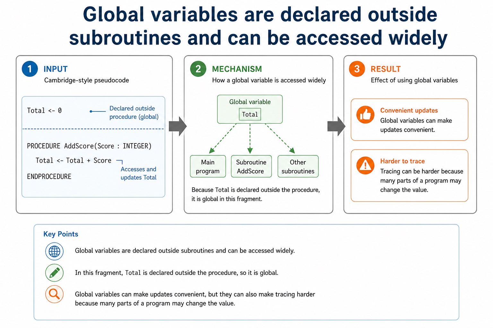
Open text transcript
Global variables
Cambridge-style pseudocode
Total <- 0
PROCEDURE AddScore(Score : INTEGER)
Total <- Total + Score
ENDPROCEDURE
Reasoning
Total is declared outside the procedure, so it is global in this fragment.
09
Diagram · 9 of 25
Java helps illustrate scope, but Cambridge pseudocode remains the answer format
Open text transcript
Java support only
Cambridge-style pseudocode
PROCEDURE PrintLocal()
Value <- 7
OUTPUT Value
ENDPROCEDURE
Java support example only
static void printLocal() {
10
Diagram · 10 of 25
Lifetime means how long a variable exists during execution
Open text transcript
Lifetime
Main program starts global variables may be created and keep their values
Procedure is called local variables are created for that call
Procedure ends local variables are destroyed or become inaccessible
Main continues global variables still exist unless the program ends
A local variable's lifetime is usually one subroutine call. It is not a tiny global variable in disguise.
11
Diagram · 11 of 25
Scope means where a variable or identifier can be accessed
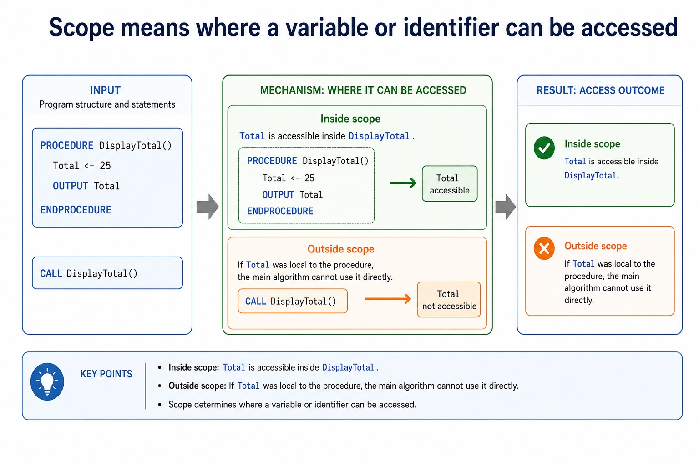
Open text transcript
Inside scope
PROCEDURE DisplayTotal()
Total <- 25
OUTPUT Total
ENDPROCEDURE
Total is accessible inside DisplayTotal .
Outside scope
CALL DisplayTotal()
12
Diagram · 12 of 25
A local variable can hide a global variable with the same name
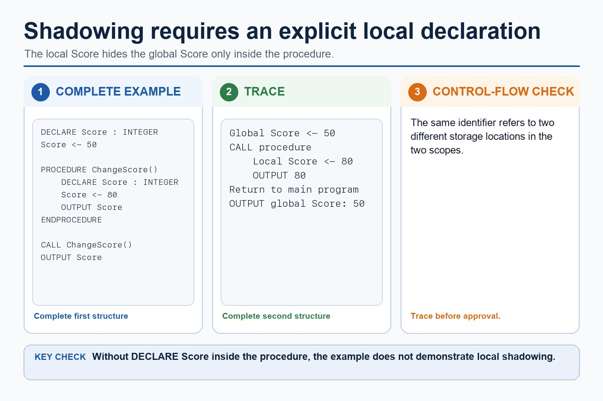
Open text transcript
Declare a global Score and set it to 50.
Inside ChangeScore, explicitly declare a separate local Score and set it to 80.
The local Score hides the global Score only inside the procedure.
The procedure outputs 80, while the main program later outputs the unchanged global 50.
13
Diagram · 13 of 25
Compare / , DIV and MOD
Open text transcript
Interactive arithmetic calculator
Use positive integers for this lesson's calculator.
Operation
Enter values and calculate.
14
Diagram · 14 of 25
DIV returns the whole-number quotient
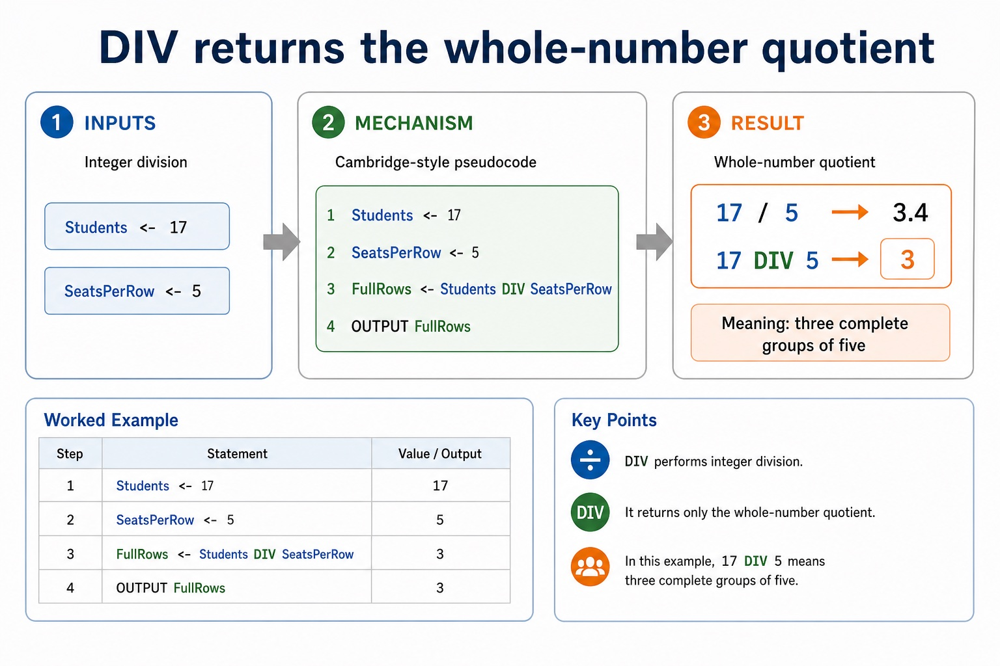
Open text transcript
Integer division
Cambridge-style pseudocode
Students <- 17
SeatsPerRow <- 5
FullRows <- Students DIV SeatsPerRow
OUTPUT FullRows
17 / 5 3.4
17 DIV 5 3
15
Diagram · 15 of 25
Java can support the idea, but Cambridge pseudocode remains the answer format
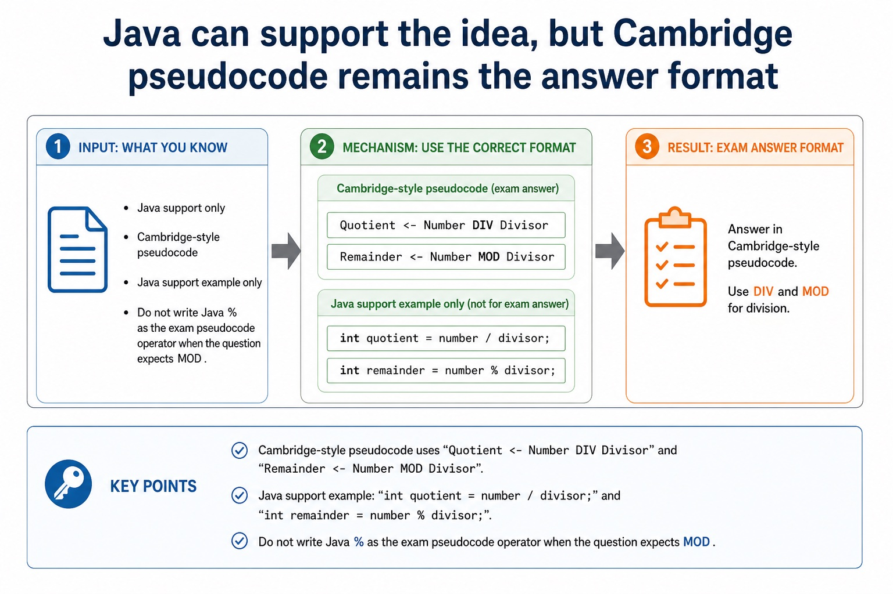
Open text transcript
Java support only
Cambridge-style pseudocode
Quotient <- Number DIV Divisor
Remainder <- Number MOD Divisor
Java support example only
int quotient = number / divisor;
int remainder = number % divisor;
Do not write Java % as the exam pseudocode operator when the question expects MOD .
16
Diagram · 16 of 25
MOD returns the remainder
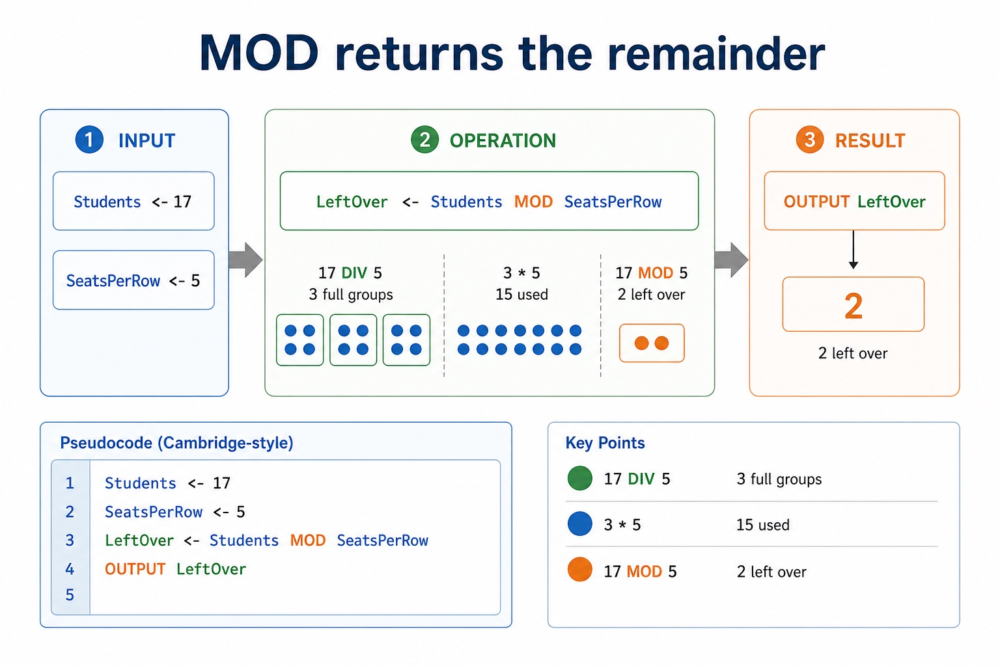
Open text transcript
Cambridge-style pseudocode
Students <- 17
SeatsPerRow <- 5
LeftOver <- Students MOD SeatsPerRow
OUTPUT LeftOver
17 DIV 5 3 full groups
3 5 15 used
17 MOD 5 2 left over
17
Diagram · 17 of 25
DIV and MOD often appear in practical algorithm tasks
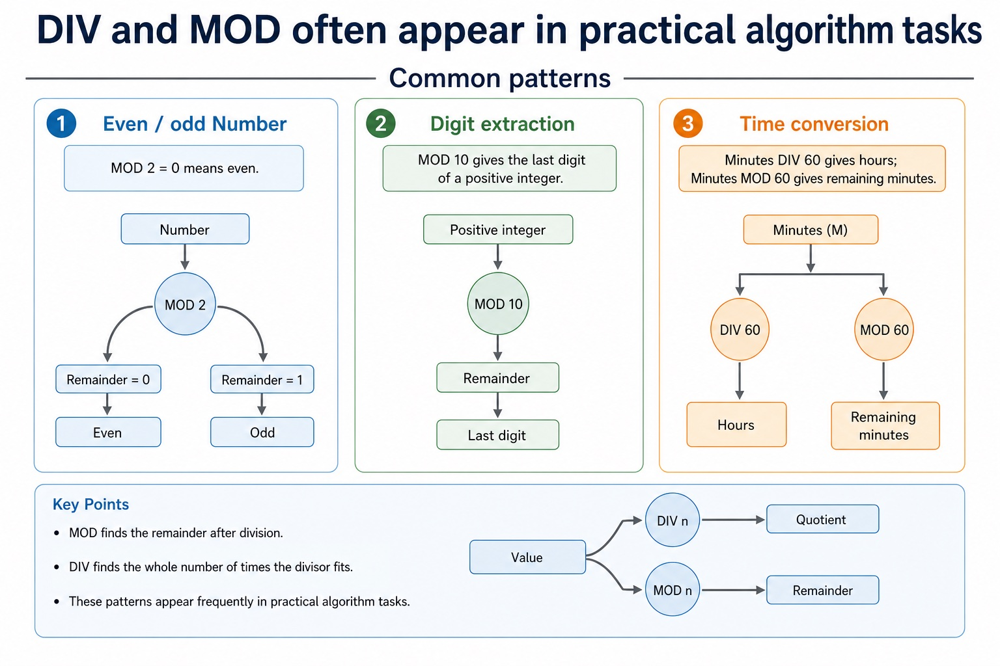
Open text transcript
Common patterns
Even / odd Number MOD 2 = 0 means even.
Digit extraction Number MOD 10 gives the last digit of a positive integer.
Time conversion Minutes DIV 60 gives hours; Minutes MOD 60 gives remaining minutes.
18
Diagram · 18 of 25
Use brackets when the intended order matters
Open text transcript
Precedence
Without brackets
Result <- 2 + 3 4
OUTPUT Result
Multiplication is evaluated before addition, so the result is 14 .
With brackets
Result <- (2 + 3) 4
Brackets force the addition first, so the result is 20 .
19
Diagram · 19 of 25
Use the identity to check your answer
Open text transcript
Quotient and remainder relationship
Number = Divisor (Number DIV Divisor) + (Number MOD Divisor)
Example: 17 = 5 (17 DIV 5) + (17 MOD 5) = 5 3 + 2
For positive integers, the remainder is smaller than the divisor. If 17 MOD 5 becomes 5 , the remainder has become too enthusiastic.
20
Diagram · 20 of 25
Build a readable result line
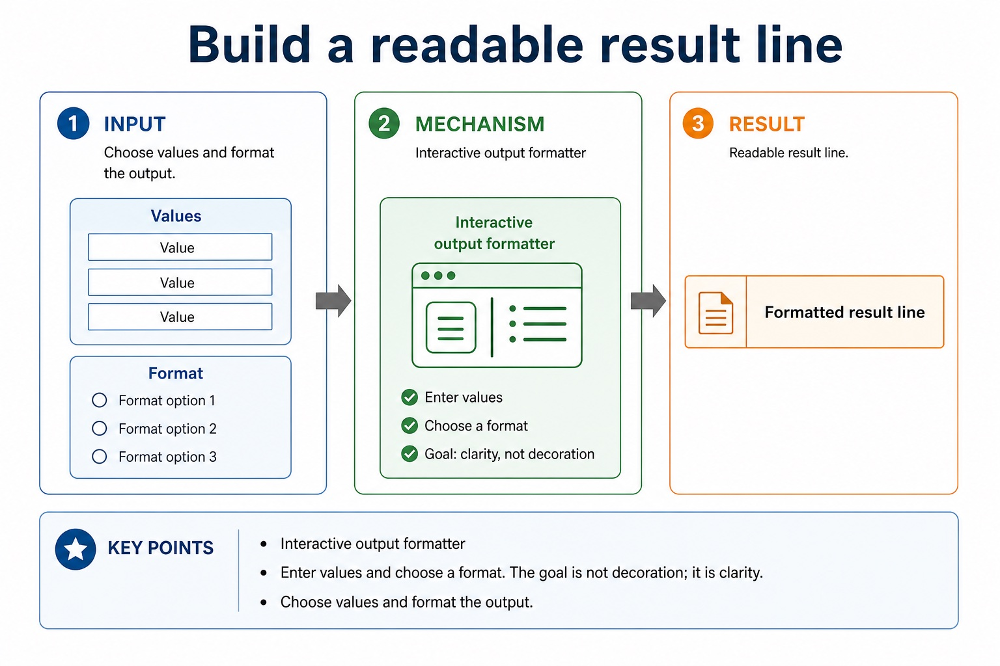
Open text transcript
Interactive output formatter
Enter values and choose a format. The goal is not decoration; it is clarity.
Choose values and format the output.
21
Diagram · 21 of 25
Formatting means controlling how values are shown
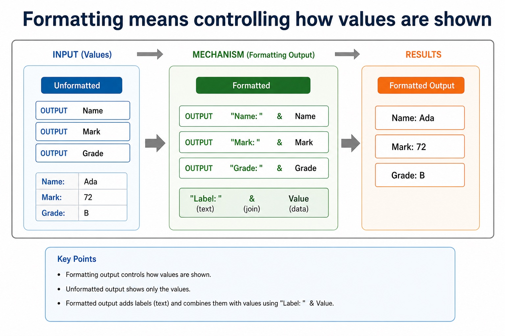
Open text transcript
Formatting output
Unformatted
OUTPUT Name
OUTPUT Mark
OUTPUT Grade
Formatted
OUTPUT "Name: " & Name
OUTPUT "Mark: " & Mark
22
Diagram · 22 of 25
INPUT reads data and stores it in a variable
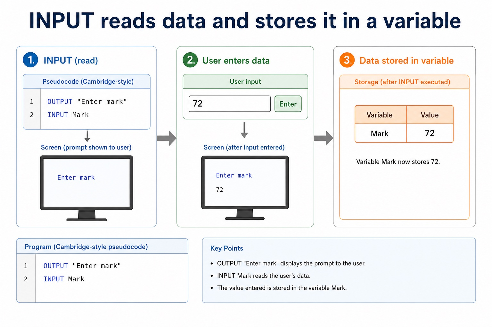
Open text transcript
Cambridge-style pseudocode
OUTPUT "Enter mark"
INPUT Mark
Prompt screen shows Enter mark
Input user enters a value such as 72
Storage Mark now stores 72
23
Diagram · 23 of 25
A good prompt tells the user what to enter and the expected format
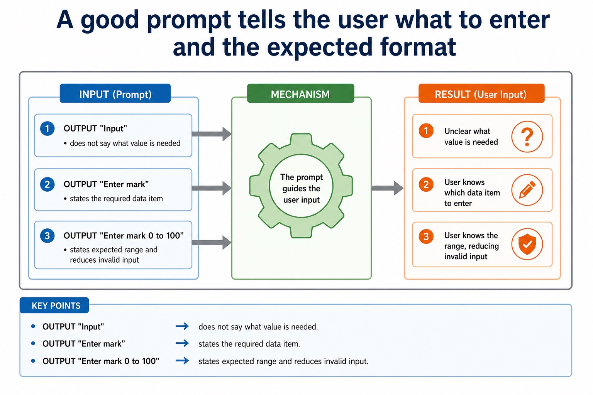
Open text transcript
OUTPUT "Input"
does not say what value is needed
OUTPUT "Enter mark"
states the required data item
OUTPUT "Enter mark 0 to 100"
states expected range and reduces invalid input
24
Diagram · 24 of 25
Formatted output can make repeated records readable
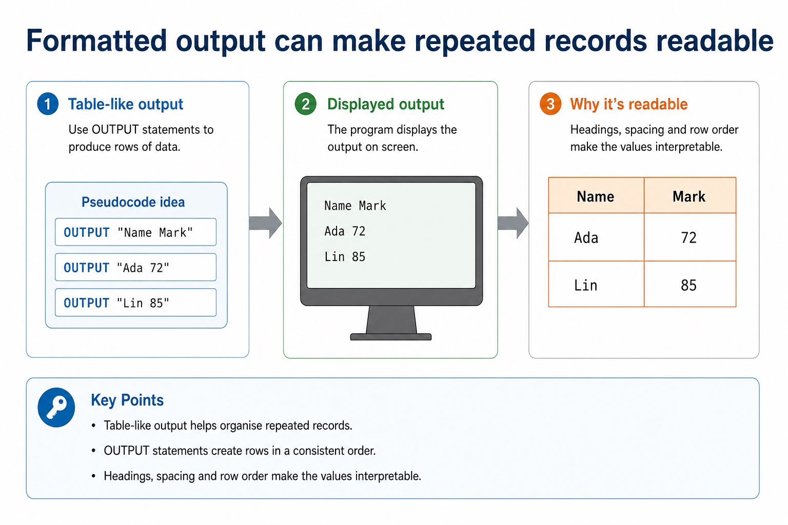
Open text transcript
Table-like output
Pseudocode idea
OUTPUT "Name Mark"
OUTPUT "Ada 72"
OUTPUT "Lin 85"
Displayed output
Name Mark
Headings, spacing and row order make the values interpretable.
25
Diagram · 25 of 25
Input data must be used with the correct data type
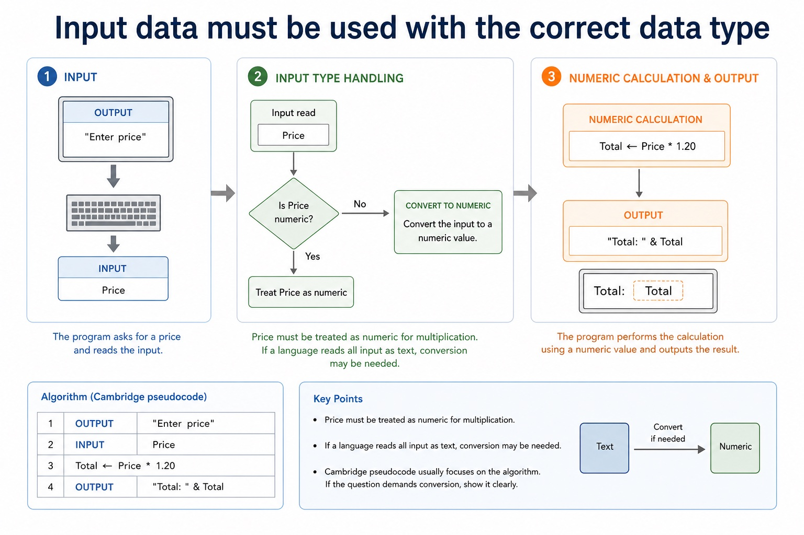
Open text transcript
Input type handling
Numeric calculation
OUTPUT "Enter price"
INPUT Price
Total <- Price 1.20
OUTPUT "Total: " & Total
Reasoning
Price must be treated as numeric for multiplication. If a language reads all input as text, conversion may be needed.
Apply the idea
Worked method
01Declare, input, calculate and output
02CONSTANT PassMark = 50 defines and initialises a constant.
03INTEGER and DECLARE Passed
04BOOLEAN declare variables.
05INPUT Mark obtains keyboard input; Passed <- Mark = PassMark assigns the result of a logical expression; OUTPUT Mark 2 and OUTPUT Passed send arithmetic and Boolean results to the console.
Open precise terminology and exam facts
Write pseudocode for declaration and initialisation of constants; declaration of variables; assignment of values; expressions using arithmetic or logical operators; input from the keyboard; and output to the console.
CONSTANT defines and initialises a fixed named value. DECLARE gives a variable a name and data type. Assignment evaluates the expression on the right of <- and stores the result in the variable on the left. INPUT obtains a value from the keyboard; OUTPUT sends a value to the console.
Arithmetic expressions use operators such as +, -, , /, DIV and MOD. Logical expressions combine comparisons with AND, OR or NOT and produce BOOLEAN results. Use = for comparison and <- for assignment.
For declarations, assignment and input/output, identify the required concept before describing its mechanism or consequence.
Beyond syllabus / 延伸知识（不要求背诵）
consistent style, modularity and automated tests reduce maintenance errors in larger programs.
Part 3 | select by learner need
Practice by question type
writerecallfoundation5 marks
Question 1. Write Cambridge pseudocode that defines and initialises constant TaxRate as 0.20, declares Price and Tax as REAL, inputs Price, assigns Price TaxRate to Tax, and outputs Tax.
Show answer and marking guidance
Answer: CONSTANT TaxRate = 0.20; declares Price and Tax as REAL; INPUT Price before the calculation; Tax <- Price TaxRate; OUTPUT Tax after assignment
Marking guidance: Do not use = for assignment, omit the constant initial value, or replace INPUT/OUTPUT with Java library calls.
Common error: For the command word write, perform that exact action; do not replace it with an unrelated fact.
applyrecallapplication2 marks
Question 2. Which statement obtains keyboard input?
Show answer and marking guidance
Answer: INPUT followed by the target variable.
Marking guidance: Award one mark for each distinct, technically accurate point or method step.
Common error: Do not repeat the same point in different words; each mark needs a separate idea or method step.
explainexplaintransfer3 marks
Question 3. Explain how declarations, assignment and input/output would be applied in a suitable computing context.
Show answer and marking guidance
Answer: CONSTANT defines and initialises a fixed named value. DECLARE gives a variable a name and data type. Assignment evaluates the expression on the right of <- and stores the result in the variable on the left. INPUT obtains a value from the keyboard; OUTPUT sends a value to the console. Arithmetic expressions use operators such as +, -, , /, DIV and MOD. Logical expressions combine comparisons with AND, OR or NOT and produce BOOLEAN results. Use = for comparison and <- for assignment. For declarations, assignment and input/output, identify the required concept before describing its mechanism or consequence.
Marking guidance: Each mark needs a relevant point linked to the stated context.
Common error: Do not copy the worked example unchanged; transfer the method and check it against the new context.
Related past-paper indexes
Reference
Marks
Command word
Question type
9618/22/S/25 Q3
8
write
write
9618/22/S/25 Q4
6
complete
recall
9618/21/S/25 Q1(b)
5
complete
calculate
9618/23/S/25 Q1(i)
2
state
recall
Index only: Cambridge question and mark-scheme wording is not reproduced on this public course page.
Part 4 | close when ready
Summary and exam reminders
Summary
Define declarations, assignment and input/output with the exact technical vocabulary expected by the syllabus.
Use the lesson method on a fresh context and show the intermediate decision, representation or calculation.
Match the shape of the answer to the command word and the available marks.
Check the final answer against the scenario instead of repeating a memorised sentence.
Common error to correct
Students often think working Java automatically means good pseudocode. Correction: Paper 2 rewards clear Cambridge-style algorithm expression.
Exam technique
Follow the command word: state gives a fact; explain links a cause to a consequence; compare covers both sides.
Match the number of independent points or method steps to the available marks.
For declarations, assignment and input/output, use the exact technical term before applying it to the scenario.